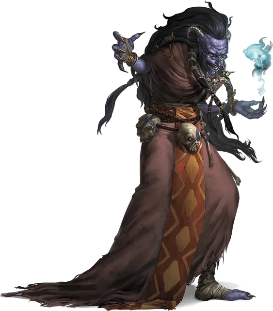

Ночная карга
Night Hag
Среднее Исчадие, нейтрально-злое

Класс Доспеха 17 (природный доспех)
Хиты 112 (15к8 + 45)
Скорость 30 футов
| мод | спас | ||
|---|---|---|---|
| СИЛ | 18 | +4 | +4 |
| ЛОВ | 15 | +2 | +2 |
| ТЕЛ | 16 | +3 | +3 |
| мод | спас | ||
|---|---|---|---|
| ИНТ | 16 | +3 | +3 |
| МДР | 14 | +2 | +2 |
| ХАР | 16 | +3 | +3 |
Навыки Восприятие +6, Обман +7, Проницательность +6, Скрытность +6
Сопротивление урону огонь, холод; дробящий, колющий, рубящий от немагических атак, кроме нанесённых посеребрённым оружием
Иммунитет к состояниям очарование
Чувства тёмное зрение 120 футов, пассивное Восприятие 16
Языки Общий, Бездны, Инфернальный, Первичный
Опасность 5 (1800 опыта)
Бонус мастерства +3
Особенности
Врождённое колдовство. Базовой характеристикой карги является Харизма (Сл спасброска от заклинания 14, +6 к попаданию атаками заклинаниями). Она может накладывать следующие заклинания, не нуждаясь в материальных компонентах:
• Неограниченно: волшебная стрела [magic missile], обнаружение магии [detect magic];
• 2/день каждое: луч слабости [ray of enfeeblement], усыпление [sleep], уход в иной мир [plane shift] (только на себя).
Сопротивление магии. Карга совершает с преимуществом спасброски от заклинаний и прочих магических эффектов.
Предметы ночной карги. Ночная карга носит с собой два крайне редких магических предмета, созданных для себя. Если они потеряются, она пойдет на многое, чтобы вернуть их, потому что создание новых требует много времени и сил.
Каменное сердце. Этот блестящий чёрный камень позволяет карге становиться бестелесной. Прикосновение к нему также лечит все болезни. Создание занимает 30 дней.
Сумка душ. Если существо умирает от воздействия Ночных кошмаров, карга ловит его душу в чёрный мешок, сшитый из плоти. Сумка вмещает только одну злую душу, и только та карга, что создала его, может ей пользоваться. Создание сумки душ занимает 7 дней и требует приношения в жертву гуманоида (из плоти которого и делается сумка).
Шабаш карг. Когда нужно работать сообща, несмотря на эгоизм, карги собираются в шабаши. В шабаш могут входить разные ведьмы, в нем они считаются равными. Тем не менее, каждая жаждет личной власти.
Шабаш — это три карги, и конфликт между двумя всегда может решить третья. Если встречается больше трех карг, например, когда возникает конфликт между несколькими шабашами, все погружается в хаос.
Ночная карга, состоящая в шабаше, имеет показатель опасности 7 (2900 опыта).
Совместное колдовство. Если все три представительницы шабаша находятся в пределах 30 футов друг от друга, каждая может накладывать следующие заклинания из списка волшебника, но ячейки заклинаний у них общие на всех.
• 1 уровень (4 ячейки): луч болезни [ray of sickness], опознание [identify];
• 2 уровень (3 ячейки): поиск предмета [locate object], удержание личности [hold person];
• 3 уровень (3 ячейки): контрзаклинание [counterspell], молния [lightning bolt], проклятие [bestow curse];
• 4 уровень (3 ячейки): воображаемый убийца [phantasmal killer], превращение [polymorph];
• 5 уровень (2 ячейки): наблюдение [scrying], связь с иным миром [contact other plane];
• 6 уровень (1 ячейка): разящее око [eyebite].
При накладывании этих заклинаний каждая карга считается заклинателем 12 уровня, использующим Интеллект в качестве базовой характеристики. Сл спасброска от заклинаний равна 12 + модификатор Интеллекта карги, а бонус атаки заклинанием равен 4 + модификатор Интеллекта.
Глаз карги. Шабаш может создать магический предмет, называемый глазом карги, который делают из настоящего глаза, покрытого лаком, подвешенного на манер кулона. Обычно глаз доверяют помощнику, для сохранения и переноски. Карга в шабаше может действием посмотреть через этот глаз, если он находится на одном с ней плане. У глаза карги КД 10, 1 хит и тёмное зрение в радиусе 60 футов. Если его разрушить, все члены шабаша получают 3к10 урона психической энергией и становятся ослепленными на 24 часа.
У шабаша может быть только один глаз одновременно, и создание нового требует проведения ритуала всеми тремя участницами. Ритуал занимает 1 час, и карги не смогут совершить его, будучи слепыми. Если во время совершения ритуала какая-нибудь карга совершает любое лишнее действие, шабаш должен начинать ритуал заново.
Действия
Когти (только в форме карги). Рукопашная атака оружием: +7 к попаданию, досягаемость 5 футов, одна цель. Попадание: Рубящий урон 13 (2к8 + 4).
Смена формы. Карга магическим образом превращается в гуманоидную женщину Маленького или Среднего размера, либо же принимает свой истинный облик. Ее статистика одинакова во всех обликах. Все снаряжение, которое она несет и носит, не превращается. Она принимает истинный облик, когда умирает.
Эфирность. Карга магическим образом переходит на Эфирный План с Материального Плана, или наоборот. Для этого у карги должно быть каменное сердце.
Ночные кошмары (1/день). Находясь на Эфирном Плане, карга магическим образом касается спящего на Материальном Плане гуманоида. Заклинание защита от зла и добра [protection from evil and good], наложенное на цель, предотвращает этот контакт, равно как и магический круг [magic circle]. Пока контакт поддерживается, цель переживает ужасные видения. Если эти видения длятся как минимум 1 час, цель не получает преимущества от отдыха, и максимум её хитов уменьшается на 5 (1к10). Если этот эффект опускает максимум хитов до 0, цель умирает, и если цель была злой, её душа захватывается сумкой душ. Уменьшение максимума хитов длится до тех пор, пока не будет устранено заклинанием высшее восстановление или подобной магией.
Описание
Хитрые и разрушительные ночные карги любят поворачивать помыслы во зло: любовь в одержимость, доброту в ненависть, преданность в пренебрежение, щедрость в эгоизм. Ночные карги испытывают извращенную радость, развращая смертных.
Ночные карги когда-то были существами Страны Фей, но за испорченность их давным-давно изгнали в Гадес, где они превратились в исчадий. Ночные карги уже давно распространились по всем Нижним Планам.
Торговцы душами. Пока человек спит, ночная карга может, находясь на Эфирном Плане, вторгнуться в его сны. Существо с истинным зрением увидит призрачный облик карги, сидящей на жертве. Карга наполняет разум жертвы сомнениями и страхами, надеясь подвигнуть её на злые поступки. Она не окончит свои ночные бдения, пока жертва не издохнет во сне. Если карге удалось побудить жертву совершить темное деяние, она ловит её искалеченную душу в сумку душ (смотрите врезку «предметы ночной карги») и уносит её в Гадес.
Шабаш. Ночная карга, состоящая в шабаше (смотрите врезку «шабаш карг»), имеет показатель опасности 7 (2900 опыта).
См. дополнительно статью: "Бестиарий: Карги"